Tutorial 2. Installing and Configuring Eclipse for Java EE
by Dr. Wenjie He
0. Overview
Eclipse is the most popular Java Integrated Development Environment (IDE). It was created by IBM, and
then was donated to the open source community. In this class, we will use Eclipse as our main IDE for web
development. There are several different versions for the Eclipse. In this tutorial, we are going to
install the
Eclipse for Java EE version. This version contains a lot of wizards for web projects,
which provide great convenience for Java-based web development.
1. Installing Java SE
Before you install
Eclipse for Java EE, you need to make sure that you have installed the current Java SE
(Software Edition) on your computer. Eclipse relies on Java SE to run.
Go to:
http://www.oracle.com/technetwork/java/javase/downloads/index.html
to select appropriate version for your computer.
Note: Download Java JDK, not JRE, because JDK is used for developing Java programs, while JRE can only be used
for running compiled Java programs.
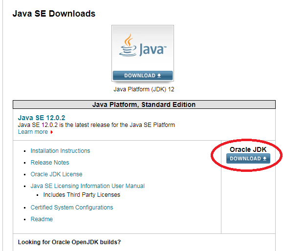
Version: Choose the right version to download. Here I want to talk about Windows versions. For other OS versions,
you need to make necessary adjustment.
There are two versions for Windows machines: Here I prefer the
exe version.
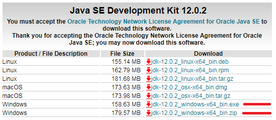
Normal installation should work for this step.
2. Installing Eclipse for Java EE
- Go to http://www.eclipse.org/downloads/eclipse-packages/ to
download the following version:
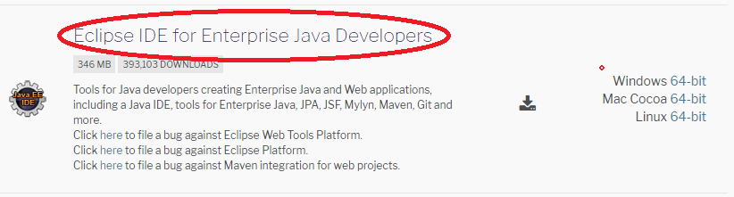
Choose the right version for the Eclipse for your machine.
Note: The Eclipse for Java EE Developers version contains the Eclipse for Java Developers version.
If you already have an older version Eclipse on your machine, you do not have to uninstall it. There won't
be any conflict between different versions.
- Create a folder for your installation. Here I use
C:\JavaEE\IDEs for discussion purpose.
You can use a different folder as you like.
- Unzip the file
eclipse-jee-2019-06-R-win32-x86_64.zip (most likely for your system),
and extract the files into the folder C:\JavaEE\IDEs. You would see a new folder
C:\JavaEE\IDEs\eclipse created.
- Rename the folder
eclipse in C:\JavaEE\IDEs to
EclipseEE (optional, and let you know it is the Java EE version).
- In the
C:\JavaEE\IDEs\EclipseEE folder, create a shortcut for the Eclipse icon
on your desktop.
- Rename the shortcut on your desktop as
EclipseEE, so that you can start your Eclipse easily
from the Desktop.
3. Running the Eclipse for Java EE
- Double-click the Eclipse shortcut on your desktop to start it.
- If a window pops up and asks you to unblock the software, click the Unblock button.
- Now you see a window about the workspace folder for Eclipse,
- It is recommended to change the location for your workspace, because later you can access your projects from their
paths relatively easier. Click the Browser... button, and navigate to the folder
C:\JavaEE\IDEs\EclipseEE.
Type \workspace after C:\JavaEE\IDEs\EclipseEE, and click OK.
You would see
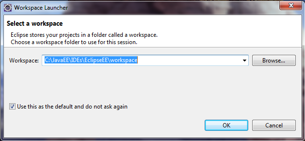
Check the checkbox for Use this as the default and do not ask again. Click OK.
- The Eclipse Workbench window starts, and you see the welcome window of Eclipse,
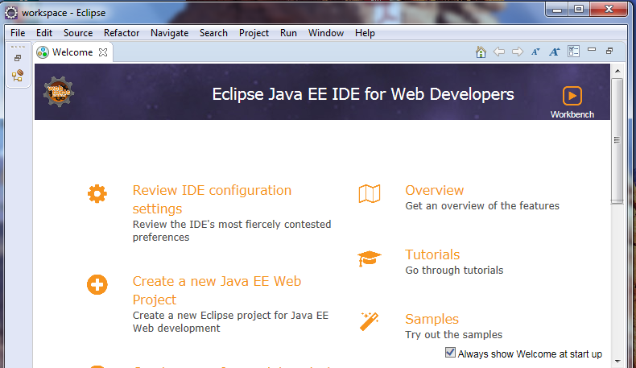
Click the cross sign of the welcome area to dismiss it, and you will get to the window below,
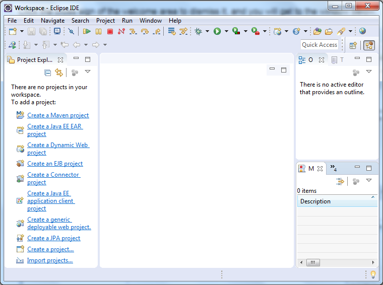
4. Configuring JDK in Eclipse for Java EE
- Open the Preferences window.
Go to the menu Window ⇒ select Preferences....
The Preferences window opens.
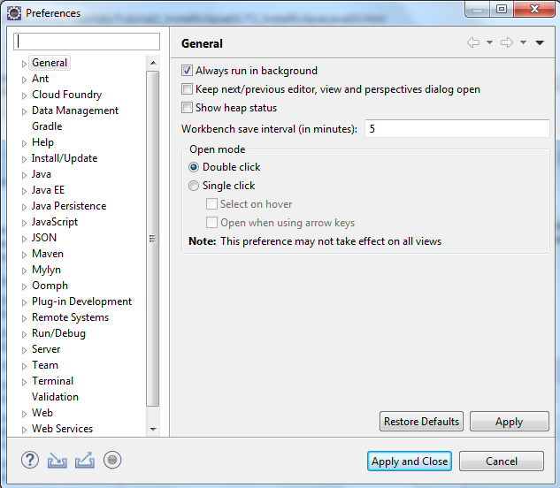
- Expand the
Java node in the left column, and select the item
Installed JREs.
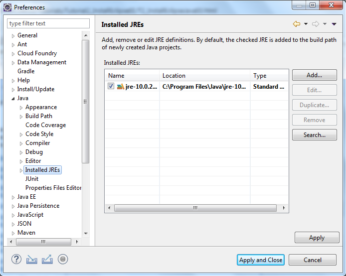
- Click the Add... button. A window pops up for you to select the JRE type.
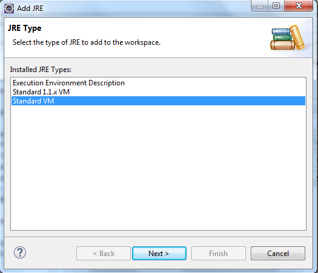
Accept the default selection Standard VM, and click the Next button. You need
to provide the definition of JRE in the window below,
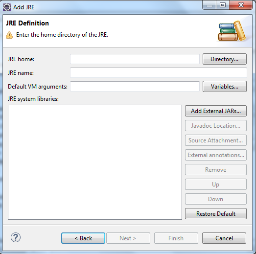
- Click the Directory... button and navigate to the JDK 12.0 (the current JDK I just downloaded)
installation directory (See the circled part for the default location). You would see
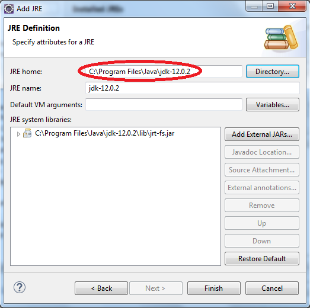
Note: Although you see JRE is required and we add a JDK version, JDK is a super version of JRE, and Tomcat
may need some of the JDK features to run smoothly.
- Click Finish. Then you are back to the Preferences window,
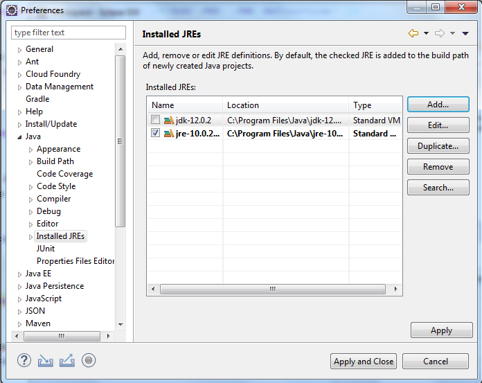
Check the checkbox for jdk12.0.2 to set it as your default JRE.
Click the Apply and Close button to make the change take effect.
5. Configuring server runtime for Tomcat
The default setting for
Eclipse for Java EE does not connect to any server.
Eclipse for Java EE has built-in support for many popular servers. To use any one of
the servers it supports, you need to install the server and configure it with the
Eclipse for Java EE. If you have not installed Tomcat 8, you need to install it first.
Note: Although there is a copy of Tomcat in the
XAMPP installation directory, here I just show you
the general way to install Tomcat from the
Apache Software Foundation.
Go to the Apache Tomcat download web site:
http://tomcat.apache.org/download-80.cgi
to download the recent version of Tomcat (Version 8, 8.5 is better).
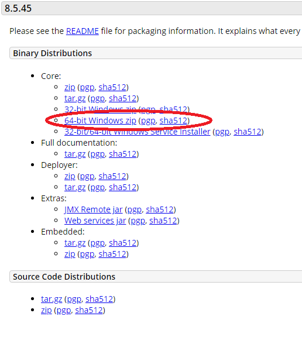
Unzip the Tomcat ZIP file to some folder. Here we put it in
C:\JavaEE\Servers. Now our Tomcat's installation
directory or Tomcat Home directory is
C:\JavaEE\Servers\apache-tomcat-8.5.45.
Now we can configure it.
- In the Preferences window used above, expand the
Server node,
and select the Installed Runtimes item. You would see
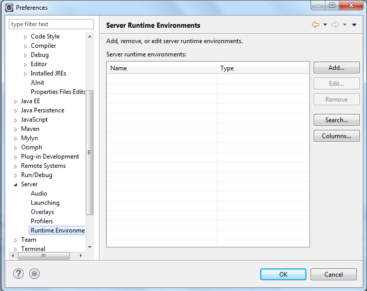
- Click the Add... button. The New Server Runtime Environment window opens.
Select the
Apache Tomcat v8.5 item.
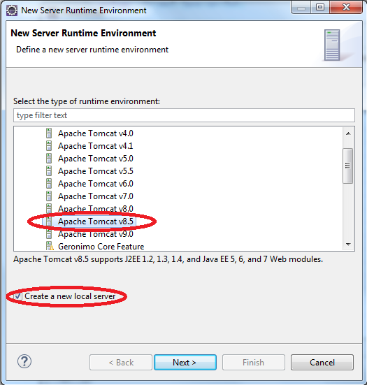
Check the checkbox for Create a new local server. Click Next,
- Click the Browse... button, and navigate to your Tomcat 8.5 installation directory.
Click Select Folder to load the information. In the drop-down box for JRE, select
jdk-12.0.2. You would see
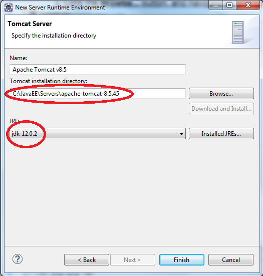
- Click the Finish button. You are back to the Preferences window again,
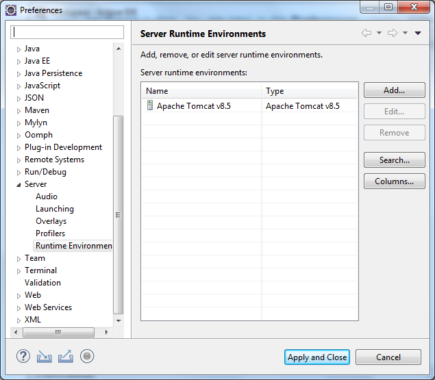
Click Apply and Close to dismiss the Preferences window. You will see the Eclipse window as follows,
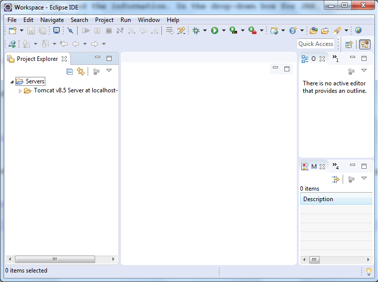
Now you are ready to develop Java web projects using Eclipse Java EE IDE.
You can try that Hello World example that we did in class to see if it works. If you feel that
example I did using the NetBeans is not good enough for you to run it in Eclipse, I will post this
example in another tutorial for you to study.
Some comments about NetBeans IDE installation
If you want to install the NetBeans IDE for your Java web development, the instructions are much simpler,
because you do not need to do any configuration after installation.
- Choose the right version
Go to the NetBeans download web site:
https://netbeans.org/downloads/8.2/. You will see
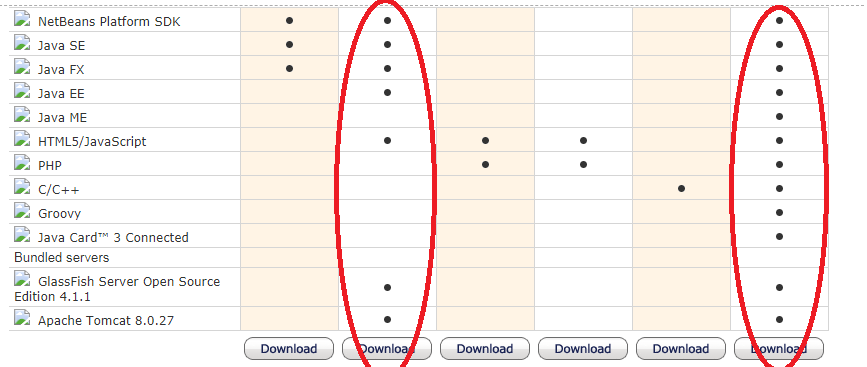
If you do not have any preference, then you should choose the first circle; if you have some good reason,
you can choose the second circle.
- Select Tomcat during the installation
In one of the installation windows, you are asked to select servers. Tomcat is not selected by default. You should
check the checkbox for Tomcat. Then complete the installation.
==========The End==========